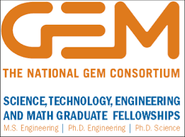
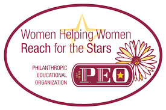

"Improved definition and prediction of Huntington's disease motor-onset using advanced statistical models."
2013-2015

National Consortium for Graduate Degrees for
Minorities in Engineering and Science,
GEM PhD Fellowship
2010-2011
Minorities in Engineering and Science,
GEM PhD Fellowship
2010-2011

Philanthropic Educational Organization (P.E.O.)
Scholar Award
2010-2011.
Scholar Award
2010-2011.
Ford Foundation Predoctoral Fellowship
2010
for Minority Participation Bridge to the Doctorate
(LSAMP-BTD) Fellowship
2008-2010
University of California, Berkeley
2003-2005.
Ford Foundation Predoctoral Fellowship
2010
for Minority Participation Bridge to the Doctorate
(LSAMP-BTD) Fellowship
2008-2010
University of California, Berkeley
2003-2005.